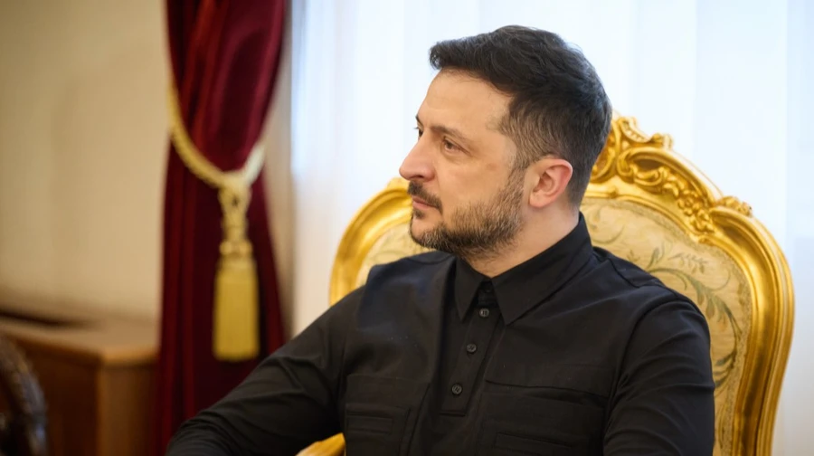
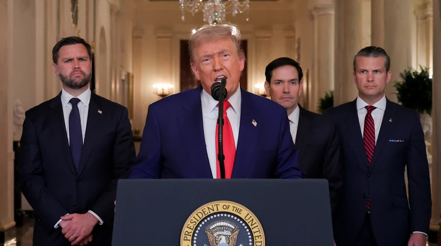
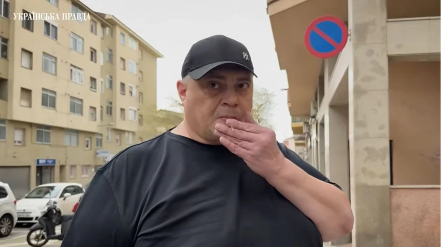

Зеленський про організацію зустрічі за участю РФ: Відчуття, що ми медіатори, а не сторона у війні

Президент Володимир Зеленський заявив, що Україна щодня веде переговори з американською стороною та працює над організацією тристоронніх зустрічей з РФ, проте через обмеження щодо місця проведення переговорів складно домовитися про зустрічі.
Мерц висловив серйозні сумніви щодо швидкого завершення війни в Ірані
Канцлер Німеччини Фрідріх Мерц висловив сумнів щодо того, що військова операція США та Ізраїлю проти Ірану близька до свого завершення, він також висловив сумніви в тому, що Вашингтон має конкретну стратегію у війні проти Ірану.
Рубіо запевняє, що США не перекидають зброю для України на Близький Схід, але це може статися

Держсекретар США Марко Рубіо переконує, що Сполучені Штати не перенаправляють на Близький Схід зброю, закуплену країнами НАТО для України, але не виключив такої можливості у майбутньому.
У Раді засекретили інформацію про виїзд нардепа Корявченкова "Юзіка" за кордон – УП

У Верховній Раді відмовилися надати інформацію про виїзди народного депутата від фракції "Слуга народу" Юрій Корявченкова ("Юзіка") за кордон, якого "Українська правда" розшукала в Іспанії.